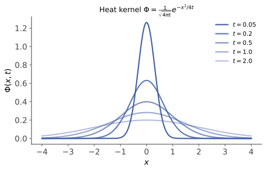

偏微分 II · 特征线、行波与热核
分离变量适合有界域，本页的武器面向无界域与更深的结构：特征线（信息沿什么路径传播）、d'Alembert 公式（波动的行波真相）、热核（扩散的基本解——高斯分布在此以 PDE 身份复出，并与扩散模型正面相认）、Fourier 变换法（把 PDE 变代数）。
1. 一阶方程与特征线法
一阶线性 PDE \(a(x,t)u_t + b(x,t)u_x = 0\) 的解法哲学：找特征曲线——沿其方向导数为零的曲线族，解沿特征线守恒。
样板（输运方程）：\(u_t + c\,u_x = 0\)，特征线 \(x - ct = \text{常数}\)，通解
——初始波形原样右移，速度 \(c\)。"解 PDE = 找到信息的传播路径"，双曲型方程的世界观一行入门。
2. 波动方程：d'Alembert 公式
全直线上 \(u_{tt} = a^2 u_{xx}\)，\(u(x,0) = \varphi,\ u_t(x,0) = \psi\)。
推导（三行）：算子分解 \(\partial_{tt} - a^2\partial_{xx} = (\partial_t - a\partial_x)(\partial_t + a\partial_x)\) ⇒ 通解 = 左行波 + 右行波 \(u = F(x + at) + G(x - at)\)（特征变量 \(\xi = x - at, \eta = x + at\) 下方程化为 \(u_{\xi\eta} = 0\)）；配初值解出 \(F, G\)：
读法：解只依赖初值在依赖区间 \([x - at,\ x + at]\) 上的值——扰动以速度 \(a\) 的锋面传播（有限传播速度，双曲的身份证）；初位移劈成两半各奔东西。有界弦的分离变量解（上一页）与行波解可互相翻译（驻波 = 对向行波叠加——\(\sin kx\cos kat = \frac12[\sin k(x{+}at) + \sin k(x{-}at)]\)）。
3. 热方程：热核与高斯的 PDE 身份

全直线上 \(u_t = a^2 u_{xx}\)，\(u(x, 0) = \varphi\)。基本解（热核）——初值为点源 \(\delta(x)\) 的解：
这就是 \(N(0,\ 2a^2 t)\) 的密度——方差随时间线性增长的高斯。一般初值的解 = 初值与热核的卷积：
三重身份的会师（本页高光）：热核 = 布朗运动的转移密度（随机过程 IV：\(B_t \sim N(0, t)\)——热方程是布朗运动的宏观面目，Einstein 1905 的洞见）；= 中心极限定理的连续化身（概率 V：无数微小碰撞之和）；= 扩散模型的命名出处（comfy 课 02：前向加噪 \(q(x_t|x_0)\) 正是热核形式的高斯，"diffusion"不是比喻是本义——生图模型在潜空间里跑的就是一个热方程加噪再倒放）。
性格对照（与波动方程针锋相对）：无穷传播速度（\(t > 0\) 瞬间处处非零）；无限光滑化（初值再糙，解立刻 \(C^\infty\)——卷积磨皮）；不可逆（倒推热方程严重病态——数值 I 条件数的极端案例；扩散模型"学习反向过程"之所以是本事，正因为反向在数学上是病态的，要靠数据先验兜底）。最大值原理：热方程的解的最值在初始或边界取得（内部不冒尖）——唯一性证明的标准武器，椭圆方程同款（复变 II 最大模原理的实亲戚）。
4. Fourier 变换法（求解引擎的现代形态）
对 \(x\) 做 Fourier 变换 \(\hat u(\xi, t) = \int u\,e^{-i\xi x}dx\)：求导变乘法 \(\widehat{u_{xx}} = -\xi^2\hat u\)——PDE 降为对每个频率 \(\xi\) 的 ODE：
反变换即热核卷积公式（高斯的 Fourier 变换还是高斯）。方法读法：Fourier 基是常系数微分算子的"特征向量"（\(\partial_x e^{i\xi x} = i\xi e^{i\xi x}\)）——变换法就是"在特征基下解方程"，与高代 V 对角化、上一页分离变量、泛函 III 谱定理是同一个思想的四种口音；每个频率模态独立衰减 \(e^{-\xi^2 t}\)（高频先死）也与上一页 \(\lambda_n \sim n^2\) 的结论无缝衔接。
5. 典型例题
例 1（d'Alembert 直用） \(\varphi = \frac{1}{1+x^2}\)，\(\psi = 0\)：\(u = \frac12\big[\frac{1}{1+(x-at)^2} + \frac{1}{1+(x+at)^2}\big]\)——钟形包一分为二，各以速度 \(a\) 东西而去。
例 2（依赖区间判断） 波方程 \(a = 1\)，初值仅在 \([-1, 1]\) 非零，问 \((x, t) = (5, 3)\) 处解是否为零：依赖区间 \([5-3, 5+3] = [2, 8]\) 与 \([-1,1]\) 不交 ⇒ 解为零（锋面还没到）。热方程同问：非零（无穷传播速度）——两型方程的性格一题分辨。
例 3（变换法解半无界） 热方程 \(x > 0\)、边界 \(u(0,t) = 0\)：奇延拓初值到全直线再用热核卷积（镜像法）——延拓的奇偶由边界条件类型决定（Dirichlet 奇延拓 / Neumann 偶延拓），数分 IV 延拓技巧的 PDE 应用。\(\blacksquare\)
分析线至此全线完工（数分 → ODE → 复变 → 实变 → 泛函 → PDE）。剩余：代数几何线四门与数学建模。